One pattern per job
Bringing the app closer to the Figma Expressive screens, with fewer looks to learn.
Is replacing emoji worth it?
Line icons: no. You were right, they made the app bland. They're removed: buttons are plain text again, which is also the clearest for older users.
Figma's illustrations: yes. Figma never used emoji or line icons for content. It uses the 12-piece Goldito illustration set from the prototype (bowl, heart, paw, moon, pill, tree, camera, dog, cat…). Emoji look different on every phone and computer; the illustrations look the same everywhere and carry the brand.
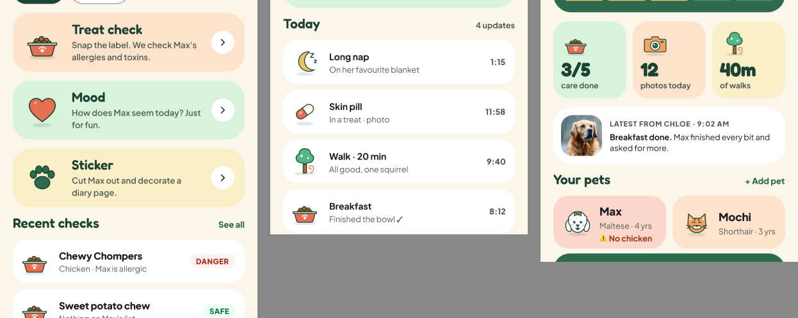
Figma reference: Snap tools, the Diary timeline and the Home stats all use the same illustrations.
The patterns
Snap
Figma's colour blocks with the bowl, heart and paw. Recent checks become white cards with the date under the name and the status on the right.

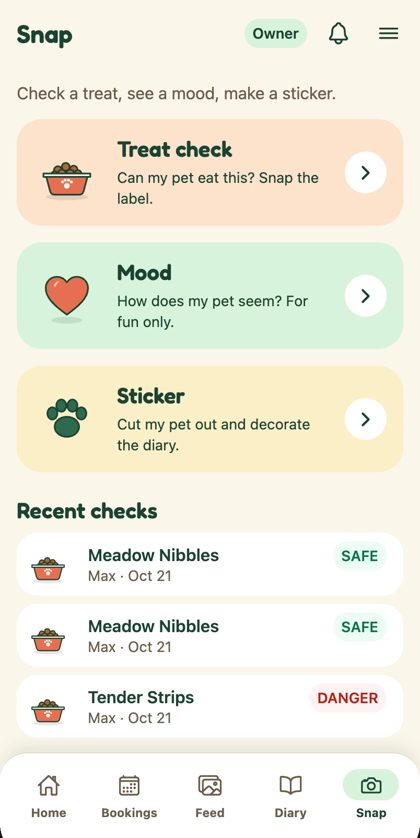
Empty states
One component change converts most empty states in the app. Titles use the section style.
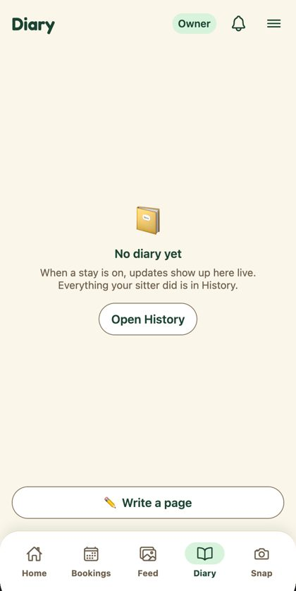
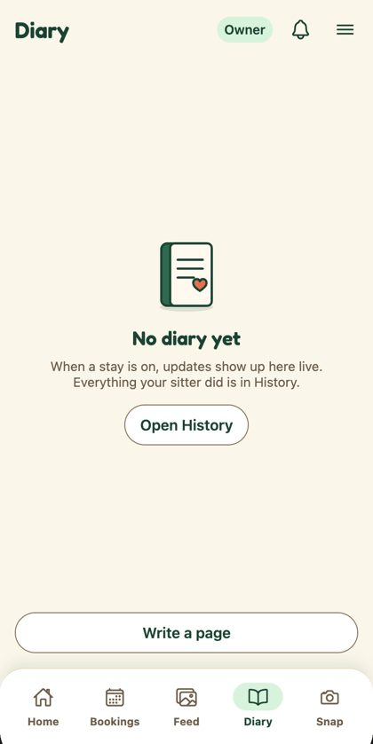
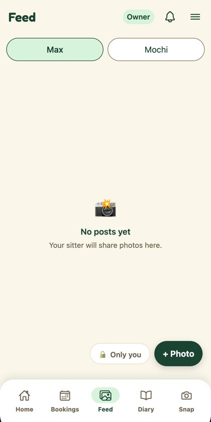
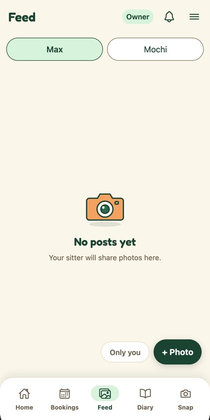
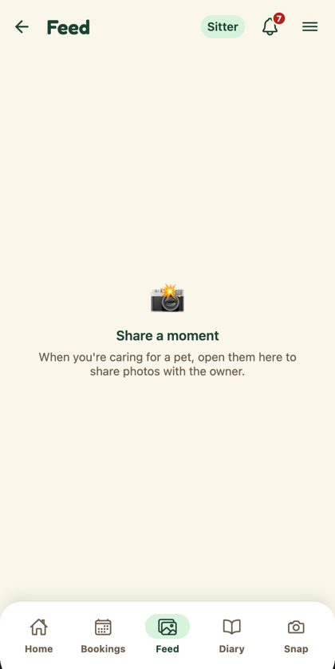
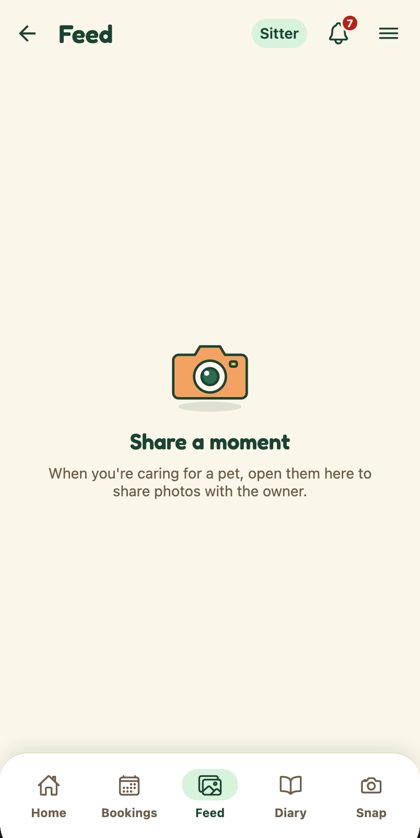
Pets without a photo
The dog and cat illustrations replace 🐶 and 🐱 wherever a pet has no photo.
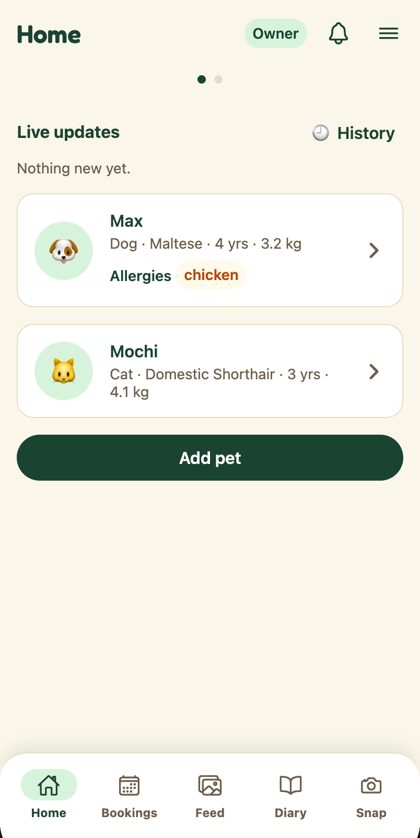
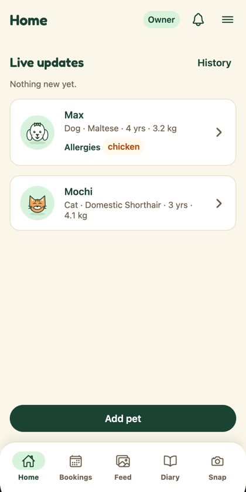
Section titles
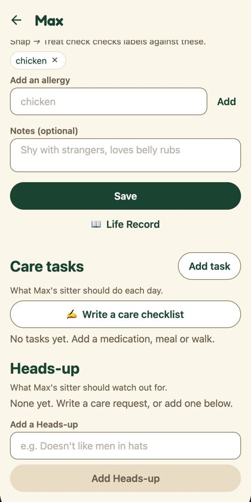
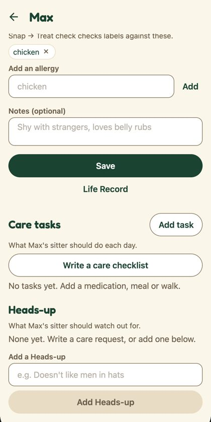
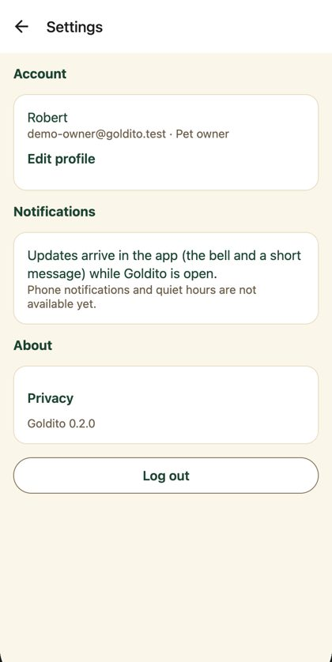
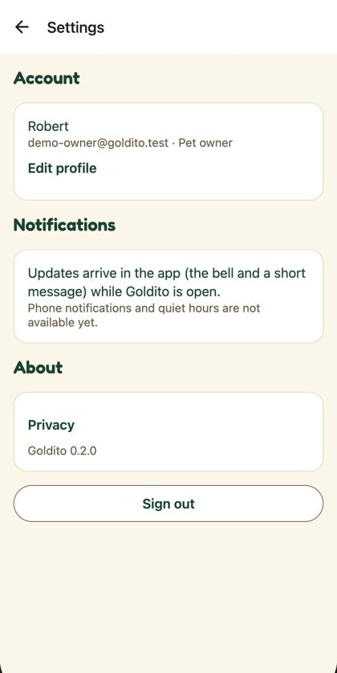
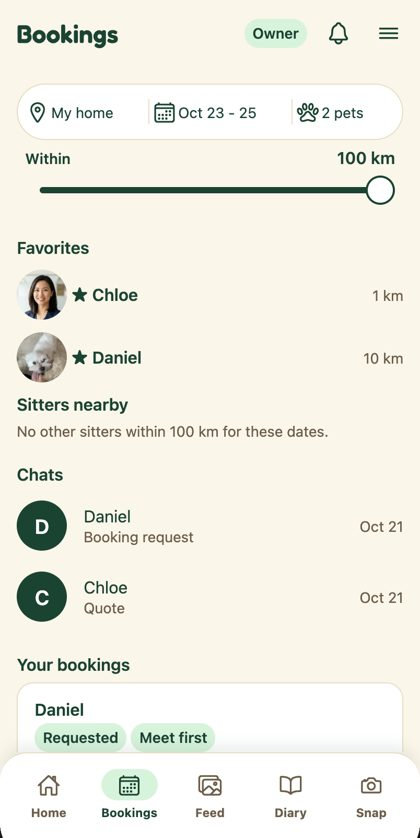
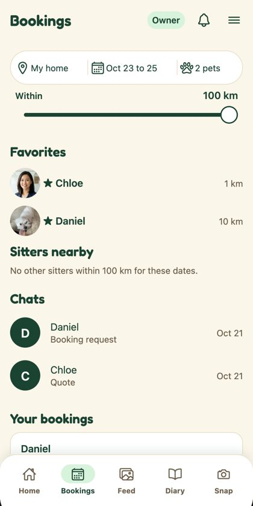
Pet chips: photo, else illustration
Decided Oct 22 (option A). Chips use the chip pattern (mint with an ink ring when selected) and the pet's first photo; the demo pets have no photo, so the illustration shows.
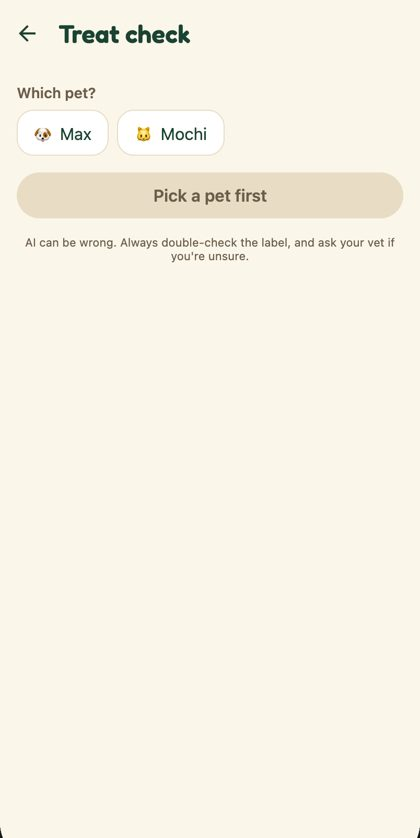
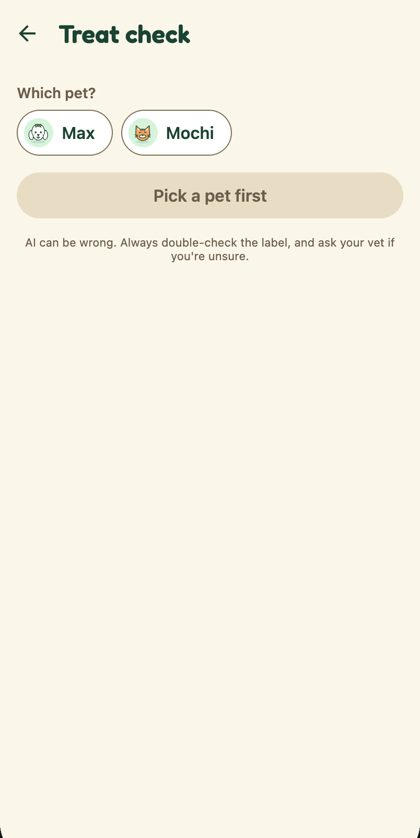
Every emoji now has an illustration
v2 of the set (43 pieces, library) covers all 22 emoji the empty states used: search, chat, mail, bell, key, card, calendar, clock, diary, star, shield and more. Owner Home's pet tiles stay with PR #215.
The code
New: components/ui/Art.tsx (43 illustrations, generated from illustrations/build.py), components/PetMark.tsx and components/ui/SectionTitle.tsx. 12 files changed.
Diff of changed files
diff --git a/frontend/app/owner/(tabs)/bookings.tsx b/frontend/app/owner/(tabs)/bookings.tsx
index 057fc71..8855a39 100644
--- a/frontend/app/owner/(tabs)/bookings.tsx
+++ b/frontend/app/owner/(tabs)/bookings.tsx
@@ -19,6 +19,7 @@ import { useSession } from "../../../providers/SessionProvider";
import { useThemedStyles } from "../../../providers/ThemeProvider";
import { useOnBookingChange } from "../../../providers/NotificationsProvider";
import { Theme } from "../../../theme/themes";
+import { sectionTitleStyle } from "../../../components/ui/SectionTitle";
type State =
| { status: "loading" }
@@ -224,11 +225,7 @@ const makeStyles = (theme: Theme) =>
section: {
gap: theme.spacing.sm,
},
- heading: {
- fontSize: theme.fontSize.body,
- fontWeight: theme.fontWeight.semibold,
- color: theme.color.text,
- },
+ heading: sectionTitleStyle(theme),
hint: {
fontSize: theme.fontSize.small,
color: theme.color.textMuted,
diff --git a/frontend/app/settings.tsx b/frontend/app/settings.tsx
index ed11e3a..2eb2841 100644
--- a/frontend/app/settings.tsx
+++ b/frontend/app/settings.tsx
@@ -12,6 +12,7 @@ import { TextButton } from "../components/ui/TextButton";
import { useSession } from "../providers/SessionProvider";
import { useThemedStyles } from "../providers/ThemeProvider";
import { Theme } from "../theme/themes";
+import { sectionTitleStyle } from "../components/ui/SectionTitle";
/** Menu → Settings (Phase 11.11, D47): the account (Edit profile), notifications, Privacy, the app version and Sign out. */
export default function SettingsScreen() {
@@ -70,7 +71,7 @@ const makeStyles = (theme: Theme) =>
StyleSheet.create({
confirm: { gap: theme.spacing.sm },
content: { gap: theme.spacing.md, paddingBottom: theme.spacing.xl },
- heading: { fontSize: theme.fontSize.body, fontWeight: theme.fontWeight.bold, color: theme.color.text },
+ heading: sectionTitleStyle(theme),
body: { fontSize: theme.fontSize.body, color: theme.color.text, lineHeight: 22 },
muted: { fontSize: theme.fontSize.small, color: theme.color.textMuted },
left: { alignSelf: "flex-start", paddingHorizontal: 0 },
diff --git a/frontend/app/sitter/(tabs)/index.tsx b/frontend/app/sitter/(tabs)/index.tsx
index ecce3c4..649996d 100644
--- a/frontend/app/sitter/(tabs)/index.tsx
+++ b/frontend/app/sitter/(tabs)/index.tsx
@@ -19,6 +19,7 @@ import { useSession } from "../../../providers/SessionProvider";
import { useThemedStyles } from "../../../providers/ThemeProvider";
import { useNotifications, useOnBookingChange } from "../../../providers/NotificationsProvider";
import { Theme } from "../../../theme/themes";
+import { sectionTitleStyle } from "../../../components/ui/SectionTitle";
type State =
| { status: "loading" }
@@ -207,11 +208,7 @@ const makeStyles = (theme: Theme) =>
section: {
gap: theme.spacing.sm,
},
- heading: {
- fontSize: theme.fontSize.body,
- fontWeight: theme.fontWeight.semibold,
- color: theme.color.text,
- },
+ heading: sectionTitleStyle(theme),
card: {
gap: theme.spacing.xs,
},
diff --git a/frontend/components/CareTasksSection.tsx b/frontend/components/CareTasksSection.tsx
index dcd82d7..b724425 100644
--- a/frontend/components/CareTasksSection.tsx
+++ b/frontend/components/CareTasksSection.tsx
@@ -33,6 +33,7 @@ import { Tag } from "./ui/Tag";
import { TimePickerSheet } from "./ui/TimePickerSheet";
import { TextButton } from "./ui/TextButton";
import { TextField } from "./ui/TextField";
+import { sectionTitleStyle } from "./ui/SectionTitle";
type Props = {
pet: Pick<Pet, "id" | "name" | "species">;
@@ -466,7 +467,7 @@ const makeStyles = (theme: Theme) =>
StyleSheet.create({
section: { marginTop: theme.spacing.lg, gap: theme.spacing.sm },
header: { flexDirection: "row", alignItems: "center", justifyContent: "space-between" },
- heading: { fontSize: theme.fontSize.title, fontWeight: theme.fontWeight.bold, color: theme.color.text },
+ heading: sectionTitleStyle(theme),
hint: { fontSize: theme.fontSize.small, color: theme.color.textMuted },
muted: { fontSize: theme.fontSize.body, color: theme.color.textMuted },
body: { fontSize: theme.fontSize.body, color: theme.color.text, lineHeight: theme.fontSize.body * 1.4 },
diff --git a/frontend/components/HeadsUpSection.tsx b/frontend/components/HeadsUpSection.tsx
index dd382a5..0a4ad7c 100644
--- a/frontend/components/HeadsUpSection.tsx
+++ b/frontend/components/HeadsUpSection.tsx
@@ -11,6 +11,7 @@ import type { Pet } from "../types/db";
import { Button } from "./ui/Button";
import { Chip } from "./ui/Chip";
import { TextField } from "./ui/TextField";
+import { sectionTitleStyle } from "./ui/SectionTitle";
const MAX = 100;
@@ -111,7 +112,7 @@ export function HeadsUpSection({ pet, userId }: { pet: Pick<Pet, "id" | "name">;
const makeStyles = (theme: Theme) =>
StyleSheet.create({
section: { marginTop: theme.spacing.lg, gap: theme.spacing.sm },
- heading: { fontSize: theme.fontSize.title, fontWeight: theme.fontWeight.bold, color: theme.color.text },
+ heading: sectionTitleStyle(theme),
hint: { fontSize: theme.fontSize.small, color: theme.color.textMuted },
muted: { fontSize: theme.fontSize.body, color: theme.color.textMuted },
chips: { flexDirection: "row", flexWrap: "wrap", gap: theme.spacing.xs },
diff --git a/frontend/components/LiveUpdates.tsx b/frontend/components/LiveUpdates.tsx
index f8ed22b..1ef28ab 100644
--- a/frontend/components/LiveUpdates.tsx
+++ b/frontend/components/LiveUpdates.tsx
@@ -21,6 +21,7 @@ import { Theme } from "../theme/themes";
import { NoticeDetail, NoticeThumb } from "./NoticeDetail";
import { SwipeToDelete } from "./ui/SwipeToDelete";
import { TextButton } from "./ui/TextButton";
+import { sectionTitleStyle } from "./ui/SectionTitle";
/** What the sitter does during a stay — shown as live cards on the owner's Home (the daily report too, FB-21). */
const LIVE_TYPES = new Set([
@@ -266,7 +267,7 @@ const makeStyles = (theme: Theme) =>
StyleSheet.create({
root: { gap: theme.spacing.xs },
head: { flexDirection: "row", alignItems: "center", justifyContent: "space-between" },
- heading: { fontSize: theme.fontSize.body, fontWeight: theme.fontWeight.bold, color: theme.color.text },
+ heading: sectionTitleStyle(theme),
muted: { fontSize: theme.fontSize.small, color: theme.color.textMuted },
card: {
flexDirection: "row",
diff --git a/frontend/components/TodayTasks.tsx b/frontend/components/TodayTasks.tsx
index 7ded93b..d7e52ac 100644
--- a/frontend/components/TodayTasks.tsx
+++ b/frontend/components/TodayTasks.tsx
@@ -11,6 +11,7 @@ import { TaskDoneSheet } from "./TaskDoneSheet";
import { Button } from "./ui/Button";
import { Card } from "./ui/Card";
import { Tag } from "./ui/Tag";
+import { sectionTitleStyle } from "./ui/SectionTitle";
/**
* Sitter's tasks for today (phase-06 6.3): what is left, one **Done** per task. Done opens a small
@@ -122,7 +123,7 @@ const makeStyles = (theme: Theme) =>
StyleSheet.create({
section: { gap: theme.spacing.sm },
headRow: { flexDirection: "row", alignItems: "baseline", justifyContent: "space-between" },
- heading: { fontSize: theme.fontSize.body, fontWeight: theme.fontWeight.semibold, color: theme.color.text },
+ heading: sectionTitleStyle(theme),
gap: { gap: theme.spacing.xs },
next: { fontSize: theme.fontSize.body, fontWeight: theme.fontWeight.bold, color: theme.color.primary },
allDone: { fontSize: theme.fontSize.body, fontWeight: theme.fontWeight.semibold, color: theme.color.text },
diff --git a/frontend/components/ui/Avatar.tsx b/frontend/components/ui/Avatar.tsx
index e94e45b..3032dc3 100644
--- a/frontend/components/ui/Avatar.tsx
+++ b/frontend/components/ui/Avatar.tsx
@@ -2,6 +2,7 @@ import { Image, StyleSheet, Text, View } from "react-native";
import { useThemedStyles } from "../../providers/ThemeProvider";
import { Theme } from "../../theme/themes";
+import { Art } from "./Art";
type Props =
/** A person: first letter of the name (Figma `Kind=Initial`). */
@@ -29,7 +30,11 @@ export function Avatar(props: Props) {
}
return (
<View style={[styles.circle, styles.emojiCircle, circle]} testID={props.testID}>
- <Text style={{ fontSize: size * 0.5 }}>{props.emoji}</Text>
+ {props.emoji === "🐶" || props.emoji === "🐱" ? (
+ <Art name={props.emoji === "🐶" ? "dog" : "cat"} size={size * 0.86} />
+ ) : (
+ <Text style={{ fontSize: size * 0.5 }}>{props.emoji}</Text>
+ )}
</View>
);
}
diff --git a/frontend/components/ui/EmptyState.tsx b/frontend/components/ui/EmptyState.tsx
index c4bed78..2528571 100644
--- a/frontend/components/ui/EmptyState.tsx
+++ b/frontend/components/ui/EmptyState.tsx
@@ -2,8 +2,16 @@ import { StyleSheet, Text, View } from "react-native";
import { useThemedStyles } from "../../providers/ThemeProvider";
import { Theme } from "../../theme/themes";
+import { sectionTitleStyle } from "./SectionTitle";
+import { Art, type ArtName } from "./Art";
import { Button } from "./Button";
+/** Emoji that have an Expressive illustration. Others still show the emoji until the art set grows. */
+const ART_FOR: Record<string, ArtName> = {
+ "🐾": "paw", "📸": "camera", "🏷️": "bowl", "✂️": "paw", "😊": "heart", "🐶": "dog", "🐱": "cat",
+ "📅": "home", "🗓️": "home", "🌤️": "home", "📔": "heart", "📖": "heart", "⭐": "heart", "🕘": "nap",
+};
+
type Props = {
emoji: string;
title: string;
@@ -18,9 +26,13 @@ export function EmptyState({ emoji, title, message, action }: Props) {
return (
<View style={styles.container}>
- <Text style={styles.emoji} accessibilityElementsHidden importantForAccessibility="no">
- {emoji}
- </Text>
+ {ART_FOR[emoji] ? (
+ <Art name={ART_FOR[emoji]} size={96} />
+ ) : (
+ <Text style={styles.emoji} accessibilityElementsHidden importantForAccessibility="no">
+ {emoji}
+ </Text>
+ )}
<Text style={styles.title}>{title}</Text>
<Text style={styles.message}>{message}</Text>
{action ? <Button label={action.label} onPress={action.onPress} variant="secondary" style={styles.action} /> : null}
@@ -41,12 +53,7 @@ const makeStyles = (theme: Theme) =>
emoji: {
fontSize: theme.icon.hero,
},
- title: {
- fontSize: theme.fontSize.body,
- fontWeight: theme.fontWeight.semibold,
- color: theme.color.text,
- textAlign: "center",
- },
+ title: { ...sectionTitleStyle(theme), textAlign: "center" },
message: {
fontSize: theme.fontSize.small,
color: theme.color.textMuted,
diff --git a/frontend/features/snap/SnapScreen.tsx b/frontend/features/snap/SnapScreen.tsx
index 32a6b2b..2dbc9db 100644
--- a/frontend/features/snap/SnapScreen.tsx
+++ b/frontend/features/snap/SnapScreen.tsx
@@ -2,7 +2,9 @@ import { router, useFocusEffect } from "expo-router";
import { useCallback, useState } from "react";
import { Pressable, StyleSheet, Text, View } from "react-native";
+import { Art } from "../../components/ui/Art";
import { Screen } from "../../components/ui/Screen";
+import { sectionTitleStyle } from "../../components/ui/SectionTitle";
import { useThemedStyles } from "../../providers/ThemeProvider";
import { formatDay, isoToZoned } from "../schedule/dates";
import { Theme } from "../../theme/themes";
@@ -22,7 +24,8 @@ export function SnapScreen({ role }: { role: Role }) {
{SNAP_TOOLS.map((tool) => (
<SnapToolCard
key={tool.key}
- emoji={tool.emoji}
+ art={tool.art}
+ block={tool.block}
title={tool.title}
blurb={tool.blurb}
onPress={() => router.push(`/${role}/snap/${tool.key}`)}
@@ -65,12 +68,16 @@ function RecentChecks({ role, pets }: { role: Role; pets: PetOption[] }) {
style={styles.row}
testID="snap-recent-row"
>
+ <Art name="bowl" size={44} />
+ <View style={styles.rowBody}>
+ <Text style={styles.name} numberOfLines={1}>
+ {c.product_name || "Treat label"}
+ </Text>
+ <Text style={styles.date} numberOfLines={1}>
+ {[pets.length > 1 ? pets.find((p) => p.id === c.petId)?.name : null, formatDay(isoToZoned(c.createdAt).day)].filter(Boolean).join(" · ")}
+ </Text>
+ </View>
<StatusBadge status={c.safety_status} />
- <Text style={styles.name} numberOfLines={1}>
- {c.product_name || "Treat label"}
- {pets.length > 1 ? ` · ${pets.find((p) => p.id === c.petId)?.name ?? ""}` : ""}
- </Text>
- <Text style={styles.date}>{formatDay(isoToZoned(c.createdAt).day)}</Text>
</Pressable>
))}
</View>
@@ -81,16 +88,18 @@ const makeStyles = (theme: Theme) =>
StyleSheet.create({
content: { gap: theme.spacing.md },
intro: { fontSize: theme.fontSize.body, color: theme.color.textMuted },
- section: { gap: theme.spacing.xs },
- label: { fontSize: theme.fontSize.small, fontWeight: theme.fontWeight.semibold, color: theme.color.textMuted },
+ section: { gap: theme.spacing.sm, marginTop: theme.spacing.sm },
+ label: sectionTitleStyle(theme),
row: {
flexDirection: "row",
alignItems: "center",
- gap: theme.spacing.sm,
- paddingVertical: theme.spacing.sm,
- borderBottomWidth: 1,
- borderBottomColor: theme.color.border,
+ gap: theme.spacing.md,
+ padding: theme.spacing.sm,
+ paddingRight: theme.spacing.md,
+ borderRadius: 20,
+ backgroundColor: theme.color.surface,
},
- name: { flex: 1, fontSize: theme.fontSize.body, color: theme.color.text },
+ rowBody: { flex: 1, gap: 2 },
+ name: { fontSize: theme.fontSize.body, fontWeight: theme.fontWeight.semibold, color: theme.color.text },
date: { fontSize: theme.fontSize.small, color: theme.color.textMuted },
});
diff --git a/frontend/features/snap/SnapToolCard.tsx b/frontend/features/snap/SnapToolCard.tsx
index 74b40e7..0f14bd4 100644
--- a/frontend/features/snap/SnapToolCard.tsx
+++ b/frontend/features/snap/SnapToolCard.tsx
@@ -1,20 +1,22 @@
import Ionicons from "@expo/vector-icons/Ionicons";
import { Pressable, StyleSheet, Text, View } from "react-native";
-import { Avatar } from "../../components/ui/Avatar";
+import { Art, type ArtName } from "../../components/ui/Art";
+import { sectionTitleStyle } from "../../components/ui/SectionTitle";
import { useTheme, useThemedStyles } from "../../providers/ThemeProvider";
import { Theme } from "../../theme/themes";
type Props = {
- emoji: string;
+ art: ArtName;
+ block: "blockPeach" | "blockMint" | "blockButter";
title: string;
blurb: string;
onPress: () => void;
testID: string;
};
-/** One Snap tool on the Snap tab: emoji, name, one line on what it does (same shape as PetCard). */
-export function SnapToolCard({ emoji, title, blurb, onPress, testID }: Props) {
+/** One Snap tool (Figma 1673:33296): a colour block, its illustration, name, one line, and a white round chevron. */
+export function SnapToolCard({ art, block, title, blurb, onPress, testID }: Props) {
const theme = useTheme();
const styles = useThemedStyles(makeStyles);
@@ -23,15 +25,17 @@ export function SnapToolCard({ emoji, title, blurb, onPress, testID }: Props) {
accessibilityRole="button"
accessibilityLabel={`${title}. ${blurb}`}
onPress={onPress}
- style={({ pressed }) => [styles.card, pressed && styles.pressed]}
+ style={({ pressed }) => [styles.card, { backgroundColor: theme.color[block] }, pressed && styles.pressed]}
testID={testID}
>
- <Avatar kind="emoji" emoji={emoji} size={56} />
+ <Art name={art} size={64} />
<View style={styles.body}>
<Text style={styles.title}>{title}</Text>
<Text style={styles.blurb}>{blurb}</Text>
</View>
- <Ionicons name="chevron-forward" size={theme.icon.sm} color={theme.color.textMuted} />
+ <View style={styles.go}>
+ <Ionicons name="chevron-forward" size={20} color={theme.color.text} />
+ </View>
</Pressable>
);
}
@@ -42,14 +46,20 @@ const makeStyles = (theme: Theme) =>
flexDirection: "row",
alignItems: "center",
gap: theme.spacing.md,
- padding: theme.spacing.md,
- borderRadius: theme.radius.lg,
- borderWidth: 1,
- borderColor: theme.color.border,
- backgroundColor: theme.color.surface,
+ paddingVertical: theme.spacing.md,
+ paddingHorizontal: theme.spacing.md,
+ borderRadius: 24,
},
- pressed: { opacity: 0.8 },
+ pressed: { opacity: theme.motion.pressOpacity, transform: [{ scale: theme.motion.pressScale }] },
body: { flex: 1, gap: theme.spacing.xs },
- title: { fontSize: theme.fontSize.body, fontWeight: theme.fontWeight.semibold, color: theme.color.text },
- blurb: { fontSize: theme.fontSize.small, color: theme.color.textMuted },
+ title: sectionTitleStyle(theme),
+ blurb: { fontSize: theme.fontSize.small, lineHeight: 20, color: theme.color.text },
+ go: {
+ width: 40,
+ height: 40,
+ borderRadius: 20,
+ backgroundColor: theme.color.surface,
+ alignItems: "center",
+ justifyContent: "center",
+ },
});
diff --git a/frontend/features/snap/tools.ts b/frontend/features/snap/tools.ts
index befd1b8..c276df9 100644
--- a/frontend/features/snap/tools.ts
+++ b/frontend/features/snap/tools.ts
@@ -1,8 +1,11 @@
+import type { ArtName } from "../../components/ui/Art";
+
/** The Snap tab's tools (Phase 12, D61): one place for the cards to read. */
export type SnapTool = "treat" | "mood" | "sticker";
-export const SNAP_TOOLS: { key: SnapTool; emoji: string; title: string; blurb: string }[] = [
- { key: "treat", emoji: "🏷️", title: "Treat check", blurb: "Can my pet eat this? Snap the label." },
- { key: "mood", emoji: "😊", title: "Mood", blurb: "How does my pet seem? For fun only." },
- { key: "sticker", emoji: "✂️", title: "Sticker", blurb: "Cut my pet out and decorate the diary." },
+/** Figma D · Owner Snap (1673:33296): each tool is a colour block with its spot illustration. */
+export const SNAP_TOOLS: { key: SnapTool; art: ArtName; block: "blockPeach" | "blockMint" | "blockButter"; title: string; blurb: string }[] = [
+ { key: "treat", art: "bowl", block: "blockPeach", title: "Treat check", blurb: "Can my pet eat this? Snap the label." },
+ { key: "mood", art: "heart", block: "blockMint", title: "Mood", blurb: "How does my pet seem? For fun only." },
+ { key: "sticker", art: "paw", block: "blockButter", title: "Sticker", blurb: "Cut my pet out and decorate the diary." },
];